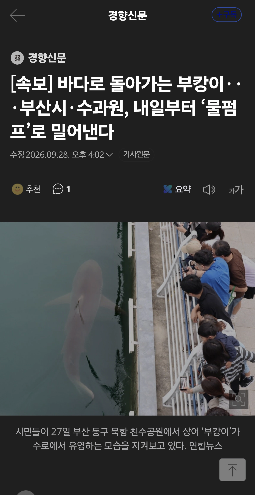

무료뷔페에서 강제퇴거 예정 ㅋㅋ

무료뷔페에서 강제퇴거 예정 ㅋㅋ
이거보고 토토 롯데 패배에 풀베팅했다
내일 나에게 고마워해라
나에게 고마워
진짜 내일하넼ㅋㅋㅋ
롯데 한화한테 졌자나 끗발 떨어져서 내보내는거임
부캉이 빨 이미 떨어졌구나...
부캉이 보내기.전에 싱적부진 롯데선수 몇명
던져줘야하는거아님?
꼭 쫓아 낼 필요가 있을까? 알아서 추우면 나가겠지. ?
뭘 먹는 모습이 관찰이 안된대 계속 굶고있는거로 판단돼서 내보낸다는데
저기 물고기 많은걸로 유명하다는데 환경이 낯설어서 그런건가?
출구를 인지못하면 고대로 죽어
이새끼 개꿀인거 알고 안나가는거네
카페 사장님이 다음엔 뭘 잡아 오시려나
다른 글에서는 먹이활동이 관측이 안된다고 그래서 내보낸다고 했던것 같은데
지가 알아서 온거면 냅두지 ㅋㅋㅋㅋ
부산은 해양생물을 풀어라-!
어차피 저걸로 스트레스주나 잡아서 스트레스주나 그게 그걸텐데
그냥 잡아서 건강 확인만 하고 다시 자유롭게 저기 풀어주면 안되나?
쟤가 종은 모르겠는데 상어자체가 온도에 취약한데 겨울이면 뭐 저기 호수에 온수라도 넣어줄래? 자유로운게 뭔지 좀 생각해라
알아서 따듯한곳 따라서 이동하겠지
야생개체인데 그것도 스스로 못할까
아무것도 안하고 있다 일터지면 좆되니까 저러는듯 한데 다시 들어오면 그때는 상황 봐가면서 그냥 냅둘듯
행여나 배 드러내고 둥둥 떠다니면 그 책임을 누가 지겠음..
일찌감치 밀어내는게 맞지..
어우.. 책임소재 돌리빵 시작될 거 생각하니까 어지럽네
가라 부캉아
괜히 방치했다가 배뒤집고 죽는꼴 보일바에 큰바다로 보내는게 좋긴할듯
보소 아재요 무한리필이라카는기 그기 진짜로 무한으로 먹어도 된다는 말이 아니라 안합니까. 물만큼 묵었음 퍼뜩 나가이소
보소 아재요 벌써 이기 며칠째요
하아따 마 손 마이간다 손 마이가
난 부캉이 오래 있으면 분명 사고 치는 관심종자들 나올거 같아서 좀 조마조마 했는데
의외로 별 일 없어서 다행인거 같음.
많은 사람들을 행복하게 해준 부캉이가 건강 하면 좋겠다.
생닭에 이어 우럭 던져주는 새끼 나옴ㅋㅋ
몸보신 하고 가는 건가 ㅋㅋㅋㅋㅋㅋㅋㅋ
억까 생기기전에 내보내야지
부캉엄마들은 부캉이가지마 하면서 안우나
억까고, 관광객이고 나발이고.
무슨 상어가 호랑이같은건줄아냐.
수중생물은 온도에 존나 취약함. 그래서 세계곳곳바다로 떠남 자기에게 맞는 수온을 찾아서.
근데 저 ㅈ만한 호수에 계속 두는게 맞겠니?
왜 안떠났대?
나가는길을 모름
거 시발 부랄 쪼그라들면 알아서 떠나것지
나 엊그제 마침 근처에 밥먹으러갔다가 부캉이 보고옴
근데 막 먹이쫒던데 부캉이 물살일면 바로앞에서 물고기 고등어만한게 막뛰었음
그리고 저기 ㅈ만하지않음 수로 존나길고 넓던데 좋아서있는듯한디
내보냈다가 다시 돌아오면 그냥 받아줘라
누가 뒤집혀서 떠다니는 부캉이 풍선 하나 띄워라ㅋㅋㅋㅋㅋㅋ
왠지 여수에 사는 누군가가 죽어라 민원넣고 있을것같다
어차피 바다인데 저기 상어가 살든말든 그게 무슨 큰 일 이라고 저렇게 내보내려고 하겠냐?
여수는 진짜 답이 없더라. 1600억이 뭐냐
내일 롯데 지나?